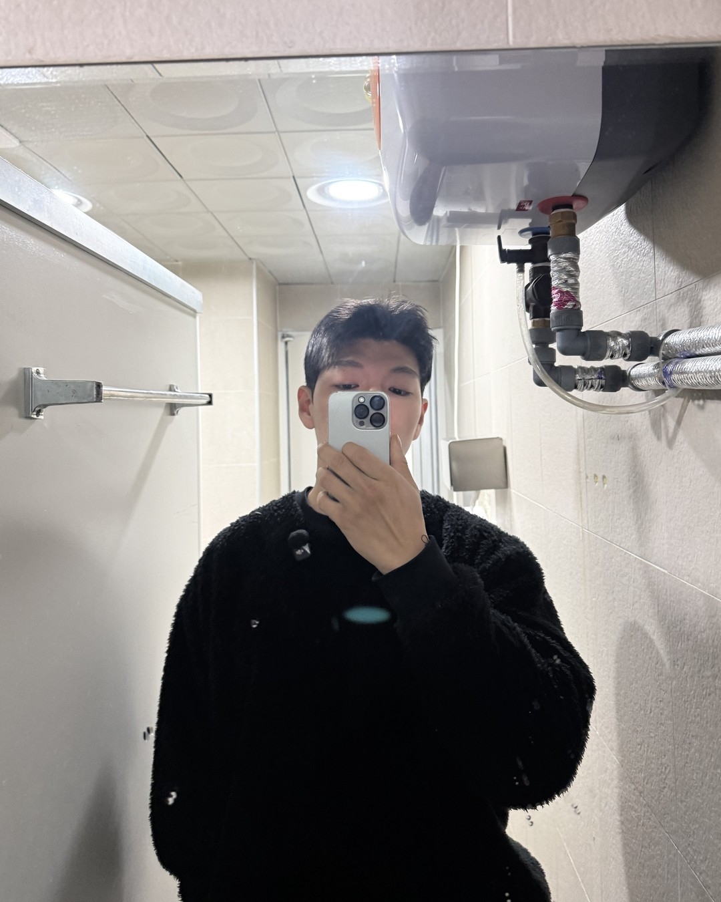
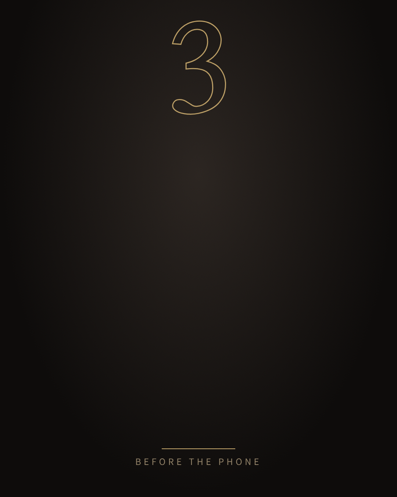
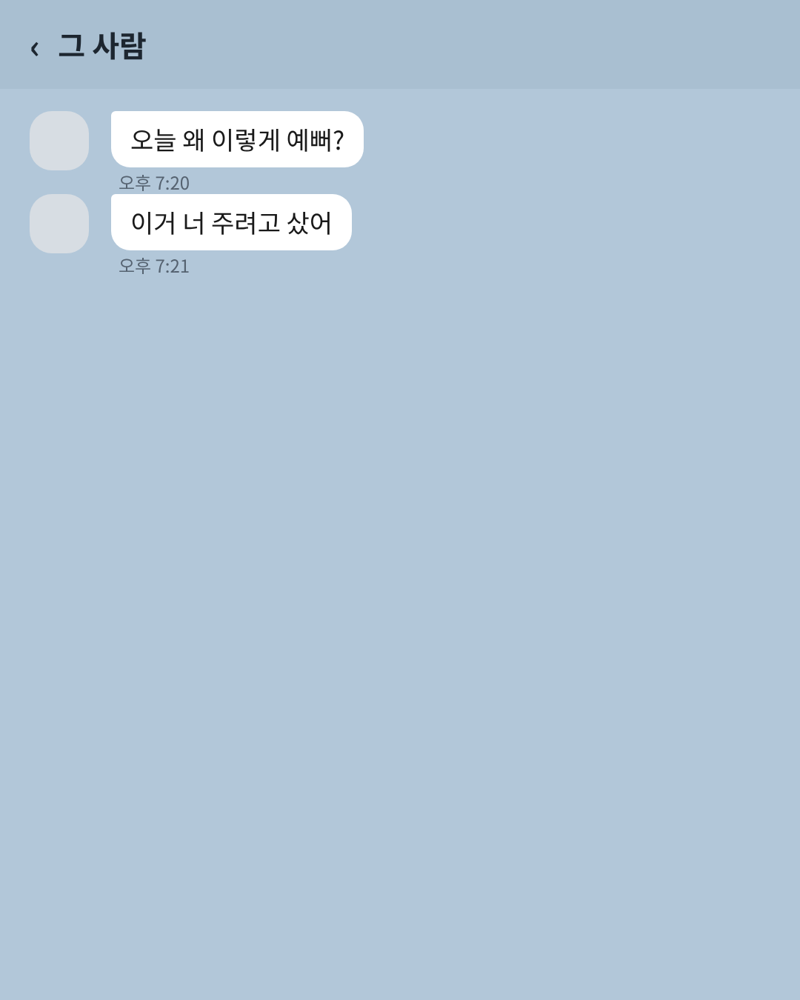
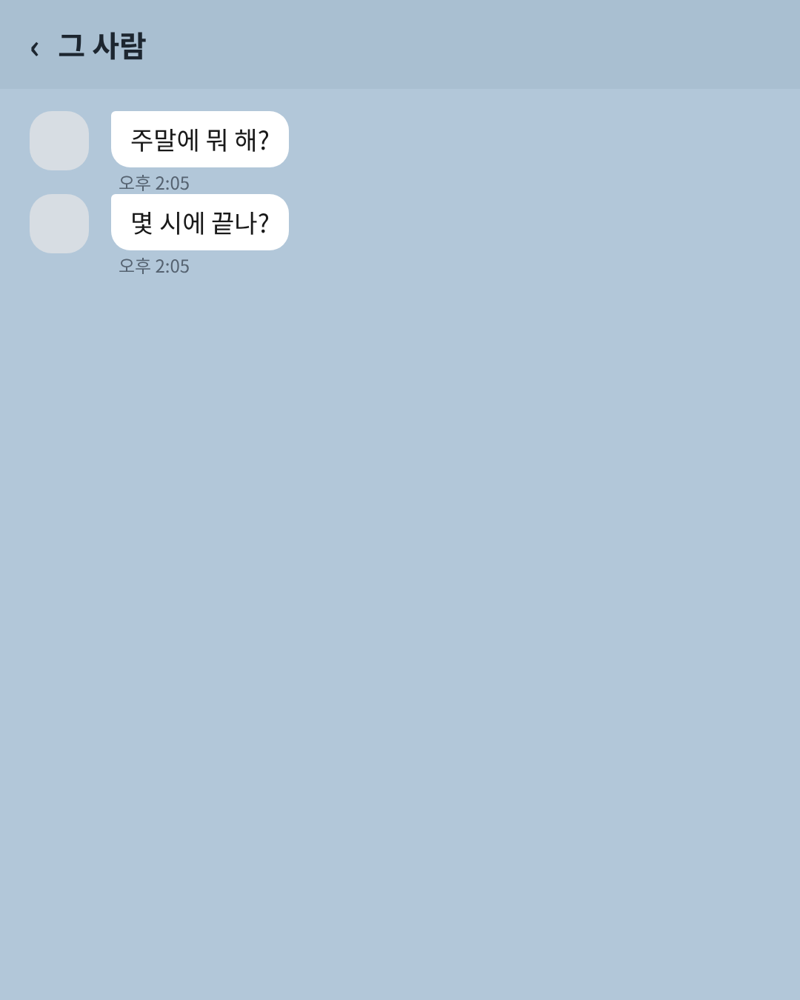
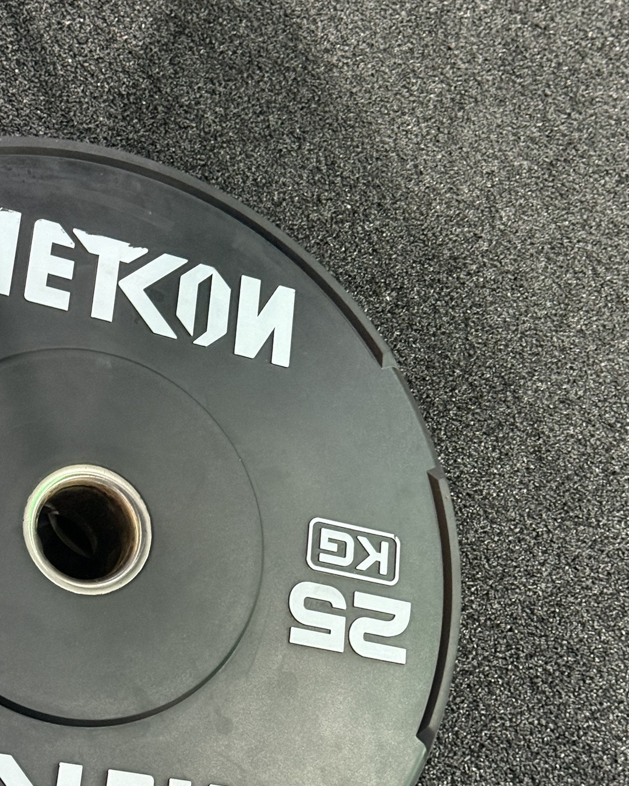
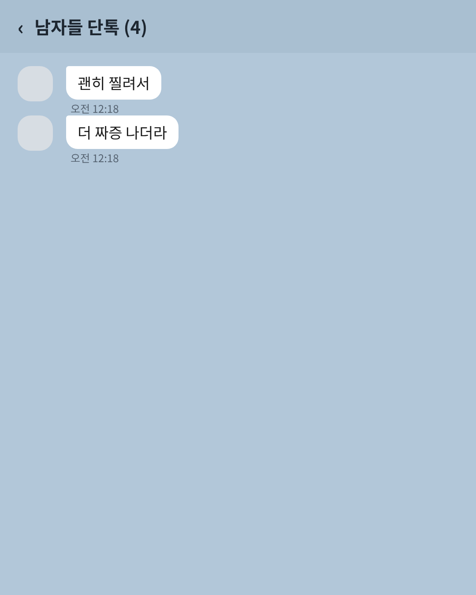
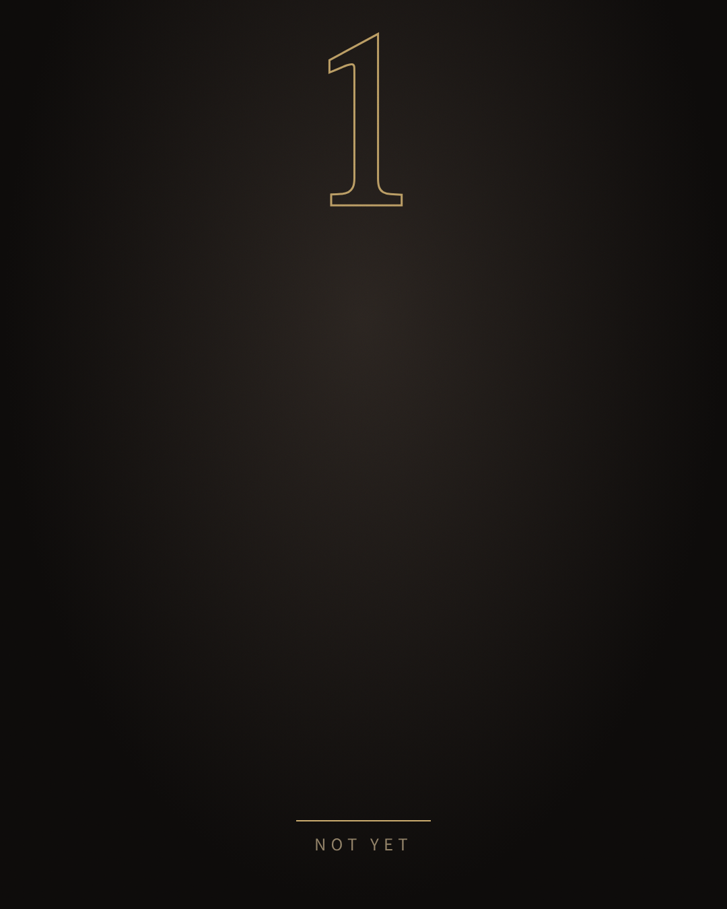
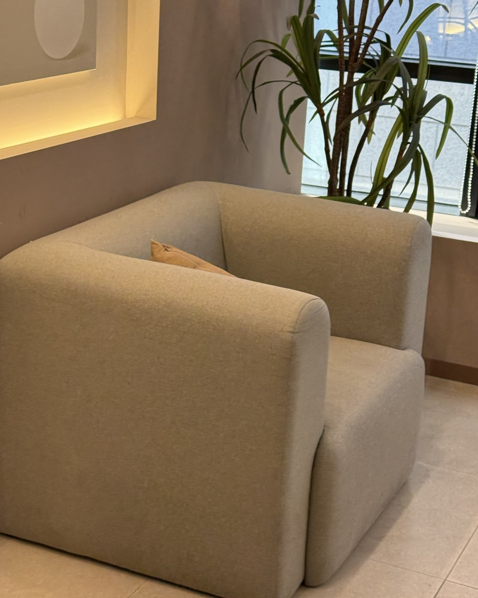
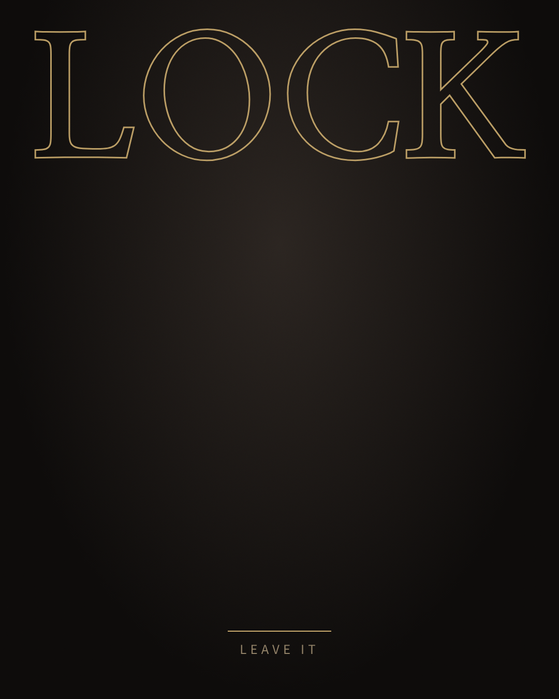
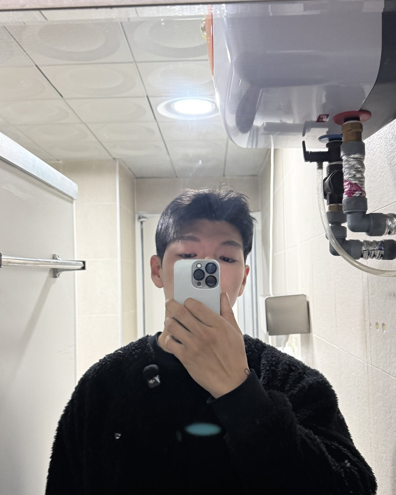

남자에게 다른 여자가 생기면,
먼저 바뀌는 것 3
(휴대폰보다 먼저 보여요.)
1/14
@mszexc
넘겨보세요 →

다들 휴대폰부터 보라고 하죠.
그런데 휴대폰은 제일 마지막에 바뀌어요.
(조심하는 남자일수록 더 그래요.)
2/14
@mszexc
남자들끼리 하는 말 #72
첫 번째.
칭찬과 선물이 갑자기 늘어요.
(미안한 마음을 말과 선물로 덮는 거예요.)
3/14
@mszexc
남자들끼리 하는 말 #72

평소와 다를 때만 보세요.
원래 다정한 사람도 있어요.
(갑자기, 이유 없이 늘었을 때가 신호예요.)
4/14
@mszexc
남자들끼리 하는 말 #72

두 번째.
당신 일정을 자세히 물어요.
("주말에 뭐 해?" "몇 시에 끝나?")
5/14
@mszexc
남자들끼리 하는 말 #72

관심처럼 보이지만
자기 시간을 비우려고 묻는 거예요.
(당신이 없는 시간을 확인하는 거죠.)
6/14
@mszexc
남자들끼리 하는 말 #72

세 번째.
작은 질문에도 예민해져요.
("왜 그런 걸 물어?" 하고 먼저 화를 내요.)
7/14
@mszexc
남자들끼리 하는 말 #72

남자들끼리는 이렇게 말해요.
"괜히 찔려서 더 짜증 나더라."
(화를 내는 쪽이 오히려 숨기는 쪽일 때가 있어요.)
8/14
@mszexc
남자들끼리 하는 말 #72

세 가지가 한꺼번에 왔다면
휴대폰 말고, 그의 시간표를 보세요.
(설명이 안 되는 빈 시간이 생겨요.)
9/14
@mszexc
남자들끼리 하는 말 #72

하나만 보였다면
아직 의심할 단계는 아니에요.
(바쁜 시기에도 이럴 수 있어요.)
10/14
@mszexc
남자들끼리 하는 말 #72

확인하고 싶다면 이렇게.
"요즘 좀 달라진 것 같아서. 무슨 일 있어?"
(추궁 말고 질문으로. 대답보다 표정을 보세요.)
11/14
@mszexc
남자들끼리 하는 말 #72

휴대폰을 몰래 보면
찾아도, 못 찾아도 내가 다쳐요.
(그리고 대화의 주도권도 그에게 넘어가요.)
12/14
@mszexc
남자들끼리 하는 말 #72
의심은 휴대폰이 아니라
평소와 다른 행동에서 시작하세요.
13/14
@mszexc
남자들끼리 하는 말 #72

이것만 기억하세요.
휴대폰은 마지막에 바뀌고, 행동은 먼저 바뀌어요.
남자가 하는 말의 뜻은 전자책 1·2권에 · 프로필 링크에서 무료로 받아보세요
14/14
@mszexc
남자들끼리 하는 말 #72